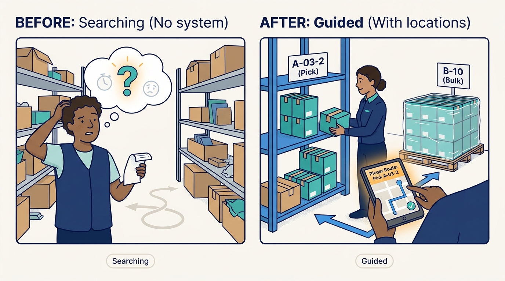
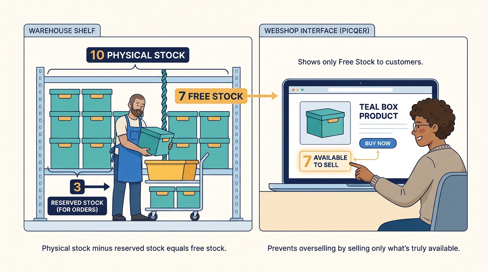
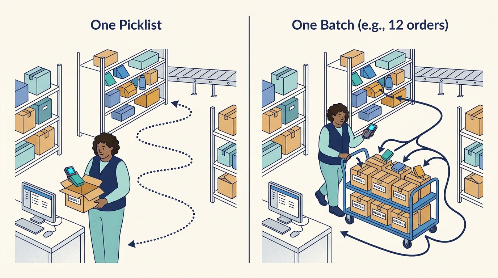
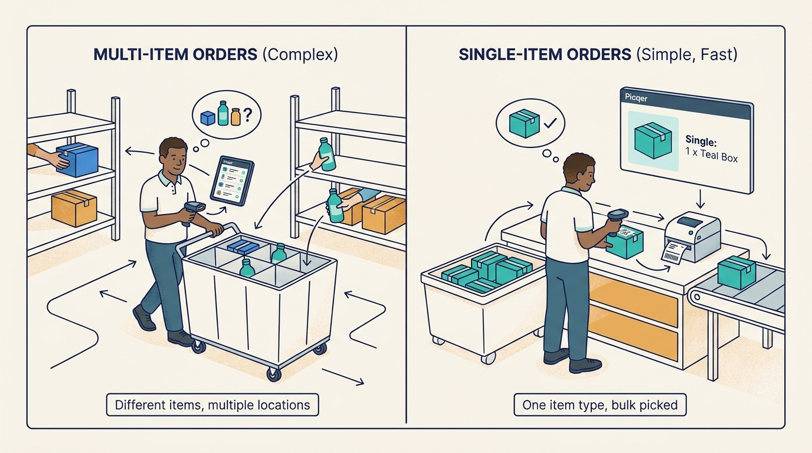
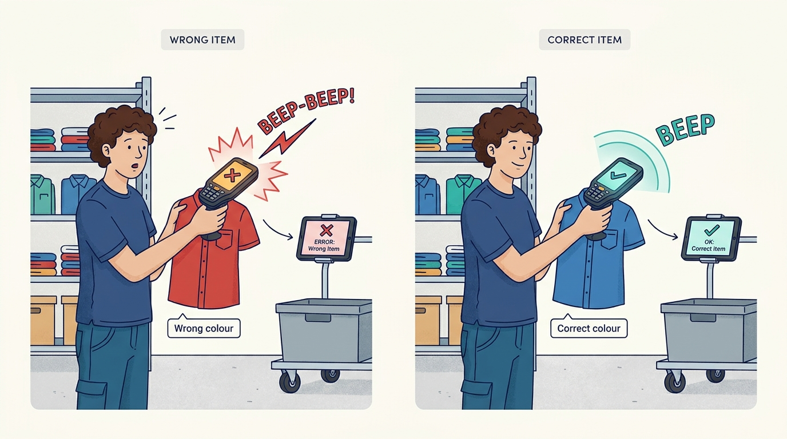
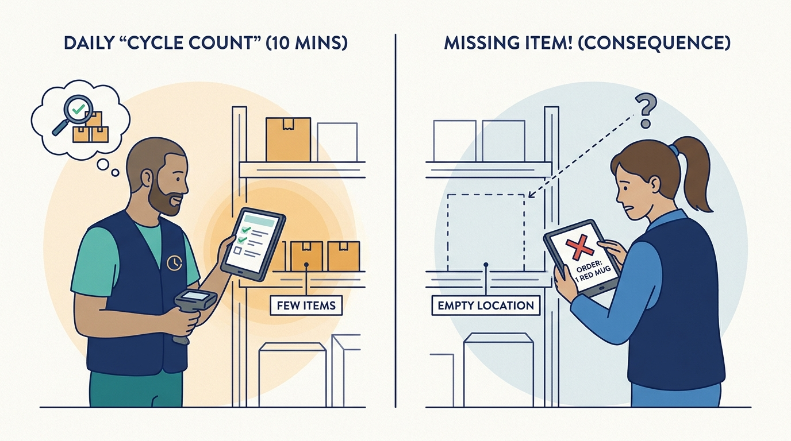
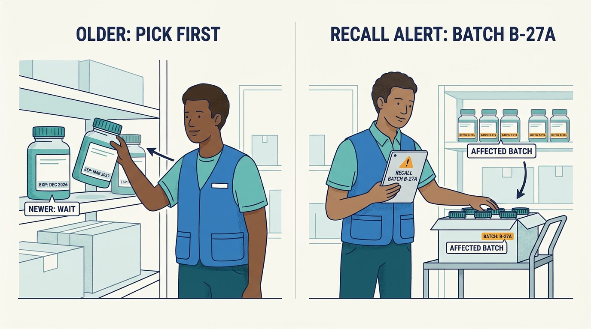
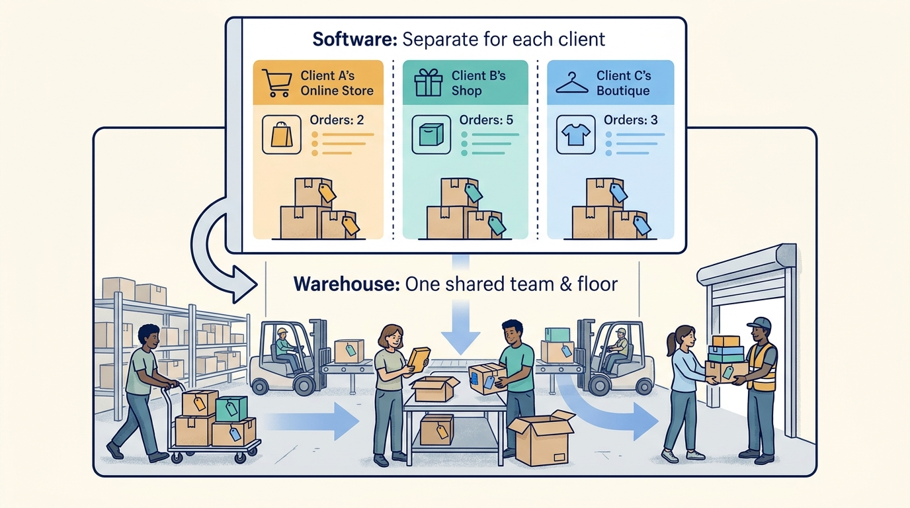

Webshop owner
Runs the online store and often its warehouse.
What matters to them
Shipping on time, correct stock and not needing more staff.
A beginner's guide
Who this is for
A curious adult coming from a different field, with no assumed knowledge of logistics or e-commerce.
What this guide covers
Covers the software that runs the inside of an online store's or fulfilment company's warehouse: knowing what stock is where, buying and receiving goods, picking and packing orders, handing parcels to carriers, handling returns, and serving fulfilment clients. Uses Picqer, a Dutch warehouse system owned by Katapull since October 2026, as the running example.
01
Explain what a warehouse management system (WMS) does that a webshop back-office does not.
Describe the path of an order from the webshop to a labelled parcel.
Explain why stock accuracy and walking distance dominate warehouse performance.
Describe how a fulfilment company uses one system for many client brands.
Name the main trade-offs when a warehouse grows from a few people to robots.
02
A warehouse management system is software that knows every product, every shelf location and every order in a warehouse, and tells people (or machines) what to do next: which goods to buy, where to put deliveries, which orders to pick, in which order to walk, which box to use and which label to print.
For an online store, the warehouse is where promises are kept or broken. A wrong item, a late parcel or an item sold that is not on the shelf costs money and customers. Above a few dozen orders a day, memory and spreadsheets stop working.
03
Runs the online store and often its warehouse.
What matters to them
Shipping on time, correct stock and not needing more staff.
Plans the team, hardware and daily priorities.
What matters to them
Cut-offs, throughput and errors at peak.
Walks, picks, scans and packs.
What matters to them
Clear instructions, little walking and no blame for mistakes.
Stores and ships goods for many webshops.
What matters to them
Serving many clients in one workflow and billing every service.
A brand that outsources its warehouse.
What matters to them
Seeing its stock and orders without calling.
Webshop platforms, carriers, returns tools, hardware suppliers.
What matters to them
Stable connections and shared customers.
04
A named place in the warehouse where stock is kept, such as a shelf position or a pallet place.

Without locations, staff search; with them, the system can plan routes.
Click the image to open it in a new tab.For example
Product X is on location A-03-2 (pick) and on a pallet at B-10 (bulk).
Why it matters
Without locations, staff search; with them, the system can plan routes.
Stock that is physically present and not yet reserved for an order.

Webshops should sell free stock, not physical stock, to avoid overselling.
Click the image to open it in a new tab.For example
10 on the shelf, 3 reserved for open orders: 7 free to sell.
Why it matters
Webshops should sell free stock, not physical stock, to avoid overselling.
The list of items to collect for one order; a batch combines several picklists in one walk.

Pickers walk most of their day, so combining orders saves time.
Click the image to open it in a new tab.For example
Twelve orders collected in one optimal round with a trolley.
Why it matters
Pickers walk most of their day, so combining orders saves time.
Orders with only one order line.

They can be picked in bulk and labelled at scan.
Click the image to open it in a new tab.For example
Picqer says 60-70% of an average webshop's orders are singles (vendor claim).
Why it matters
They can be picked in bulk and labelled at scan.
Confirming each item by scanning its barcode.

It prevents most picking errors, especially by new staff.
Click the image to open it in a new tab.For example
The scanner beeps if the wrong colour is picked.
Why it matters
It prevents most picking errors, especially by new staff.
Counting a few locations at a time all year instead of one big annual count.

Errors are found before they cause oversold orders.
Click the image to open it in a new tab.For example
Ten minutes of counting in a quiet hour each day.
Why it matters
Errors are found before they cause oversold orders.
Identifiers of a production lot and its expiry.

Needed to ship oldest first and to recall a lot.
Click the image to open it in a new tab.For example
A supplements lot with expiry March 2027.
Why it matters
Needed to ship oldest first and to recall a lot.
A company that stores and ships goods on behalf of other businesses.

Its software must separate clients yet run one efficient floor.
Click the image to open it in a new tab.For example
A 3PL ships for 50 webshops from one building.
Why it matters
Its software must separate clients yet run one efficient floor.
05
This is a selective, mostly Dutch view; other markets developed differently.
Small webshops packed from memory and spreadsheets; WMS software was built for large logistics companies and needed consultants.
What this helps explain
Most webshops had no affordable WMS.
Cloud WMS for webshops appeared, priced per order and connected to webshop platforms in minutes; Picqer started in November 2012.
What this helps explain
Small warehouses could professionalise without IT projects.
Mobile handheld apps, rules automation and multi-client fulfilment versions became standard; 3PLs offered client portals.
What this helps explain
Paperless, guided work and outsourcing grew.
Robots and goods-to-person systems reached mid-size warehouses, and software groups such as Katapull began combining ERP, shipping, returns and WMS.
What this helps explain
The WMS becomes one part of a connected commerce chain.
06
Fictional characters: Lisa runs a Dutch phone-accessories webshop with a small warehouse on Picqer; Tom, a student, works there on Saturdays; Mark orders on a Friday evening.
Mark's order is imported from the webshop. Picqer reserves one case and one charger, so the webshop shows one less of each.
Why this step matters
Free stock is updated immediately, preventing overselling.
Mark chose next-day delivery, so a rule marks the picklist urgent and chooses the carrier service.
Why this step matters
Decisions are made by rules instead of sticky notes.
On the handheld, Tom starts a batch of eight orders, including Mark's, and follows the route. He scans each item.
Why this step matters
One walk serves eight customers and scans catch mistakes.
At the packing table Picqer advises an envelope; after the last scan the label prints automatically and the webshop receives the tracking code.
Why this step matters
No typing and no wrong boxes.
Mark returns the case via a returns portal; it is pre-registered in Picqer, scanned on arrival, inspected and put back in stock.
Why this step matters
Sellable goods are back on sale quickly.
The outcome
Mark gets his parcel the next day, Lisa's stock is right without counting, and Tom never needed to know the products.
07
Guided, scanned work lets fewer and less-experienced people ship more orders correctly. Picqer charges a monthly plan with included orders plus a fee per extra order.
For example
A customer quote says one employee can do the work of four or five (testimonial, not a measurement).
Client separation, portals and recorded packaging let a fulfilment company grow its client list and bill accurately.
For example
A 3PL handles 50 clients with 12 employees (VASCO-fulfilment case).
Platforms, carriers and tools integrate with the WMS because their customers ask for it.
For example
Returns tools pre-register returns in the warehouse system.
The owner group can offer ERP, warehouse, shipping, returns and EDI as connectable parts.
For example
Logic4 customers can step up to Picqer when they need more warehouse functionality.
08
Goods are misplaced, damaged or moved without booking.
The competing needs
More counting costs time; less counting costs oversold orders.
In practice
A product is booked on a shelf but was moved to another.
How people respond, and its limits
Real-time booking on handhelds and small risk-based cycle counts.
Volume multiplies while experienced staff do not.
The competing needs
Hiring temps adds capacity but risks errors.
In practice
A Black Friday backlog at carrier pickup time.
How people respond, and its limits
Guided, scanned work and batching.
Larger warehouses need more options, which can make software harder.
The competing needs
Every setting helps someone and confuses someone else.
In practice
Rules that only a few experts understand.
How people respond, and its limits
Sensible defaults with optional rules.
Each shop, carrier and tool has its own API that changes.
The competing needs
Building every connection yourself is costly; relying on partners risks quality.
In practice
A carrier changes its label API before peak.
How people respond, and its limits
Own the main connectors and offer an open API for partners.
09
A better way to understand it
Webshops usually track only sellable stock, not locations, reservations, routes or receipts.
A better way to understand it
Most gains come first from locations, batching and scanning; robots come later at higher volumes.
A better way to understand it
Client portals can show stock and orders in real time.
10
A WMS knows every product, location and order and directs the work.
Free stock, scanning and batching are the foundations of fast, correct shipping.
Fulfilment companies need the same system plus client separation, portals and billing.
Warehouses grow from packing tables to handhelds to mechanisation, ideally on one system.
Integrations with shops, carriers and returns tools are as important as the warehouse features.
11
Pause and think through each situation, then open the answer.
Because part of the physical stock is already reserved for open orders.
The reasoning
Selling physical stock would promise the same item twice.
One walk collects items for several orders.
The reasoning
Walking is the largest part of picking time.
Each client owns its own stock and data.
The reasoning
Mixing them causes wrong shipments and data leaks.
For products like food, supplements or cosmetics.
The reasoning
They enable first-expiry-first-out and recalls.
12
What share of your orders is scan-verified?
How long does a new picker need before working alone?
How often do you count each location per year?
Which integrations would stop your warehouse if they failed?
At what volume would mechanisation pay off for you?
13
Concrete description of batch, singles and scan-based picking.
Explains physical, reserved and free stock and cycle counting.
How a 3PL runs many clients in one system.
The step-by-step path to mechanisation.